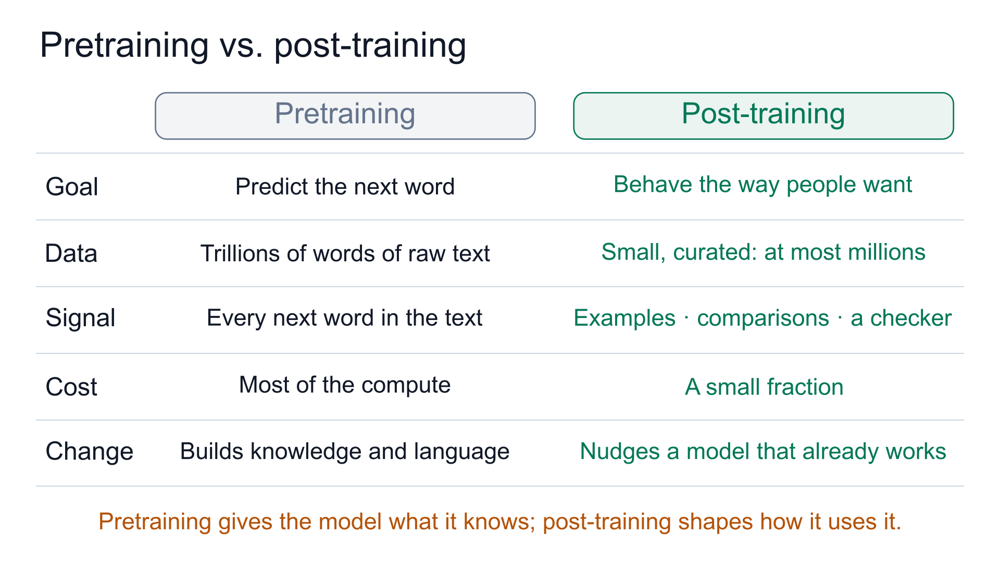

It has read an ocean of text. Why can't it handle a simple request?
In early 2022, when OpenAI introduced InstructGPT, it showed a telling comparison. GPT-3 was given a simple request:
"Explain the moon landing to a 6 year old in a few sentences."
GPT-3 didn't explain the moon landing. It wrote more assignments instead:
"Explain the theory of gravity to a 6 year old. Explain the theory of relativity…"
Given the same request, InstructGPT simply answered: people went to the moon, took pictures of what they saw, and sent them back to Earth so we could all see them.
GPT-3 isn't broken. It's doing exactly what it was trained to do.
A pretrained model learns one thing: given some text, predict the next word.
It learns this from enormous amounts of mostly web text. On the web, one question is often followed by another: worksheets, homework lists, "ten questions about…" pages. So "write a few more questions" is a perfectly reasonable guess about what comes next.
A model that has only been pretrained is called a base model. Everything we do after pretraining to turn that text continuer into a useful assistant is called post-training. InstructGPT is GPT-3 after post-training.
This article explains why we need it, how it differs from pretraining, and the three techniques it usually involves.

Why pretraining isn't enough
Think of someone who has read every book in a huge library but has never held a job. They can finish almost any sentence you start. But ask them for help, and they may just keep talking about whatever your words reminded them of.
Base models have three gaps like this:
- They don't reliably follow instructions. Ask for an explanation and you may get more questions; ask for a translation and you may get more text in the original language.
- They can be harmful. Nothing in "predict the next word" says to avoid dangerous advice, abuse, or confident falsehoods, such as a wrong answer to a medical question.
- They struggle with long, multi-step problems. Knowing what math text looks like isn't the same as reliably working a problem through to the right answer.
All three come from the same root:
The pretraining objective, success at predicting words in web text, doesn't match what people actually need: a model that is helpful and not harmful.
Post-training closes that gap.
Pretraining vs. post-training
Post-training doesn't build a new model. It keeps training the same one. What changes is the data and the signal that tells the model what "better" means.

Goal. Pretraining: predict the next word in text. Post-training: behave the way people want, which means following instructions, staying safe, and getting answers right.
Data. Pretraining uses raw text, trillions of words of it. Post-training uses small, carefully made sets: requests paired with good responses, comparisons between two answers, and problems with checkable answers. A large instruction dataset holds at most millions of examples.
Signal. In pretraining, every next word in the text is the target. In post-training, the signal is a demonstrated answer, a judgment of which answer is better, or a pass/fail from a checker.
Cost. Pretraining is where most of the compute goes. Post-training costs a small fraction of it.
How much the model changes. Pretraining builds knowledge and language from scratch. Post-training mostly nudges a model that already works well.
Roughly: pretraining gives the model what it knows; post-training shapes how it uses it.

Small data can still change behavior a lot. In one study, mixing just 500 safety examples into a large instruction dataset was enough to substantially reduce harmful responses.
Three techniques, three kinds of teacher
Post-training is usually described as three techniques: instruction tuning, preference alignment, and reinforcement learning with verifiable rewards (RLVR). The easiest way to tell them apart is to ask what kind of teacher each one learns from:
One shows, one compares, one checks.
1. Instruction tuning: learn from examples
A new employee often learns from worked examples: here is a request, here is a good answer.
Instruction tuning does the same. The data is a set of instructions paired with good responses, for example "Translate this Spanish sentence into English" followed by the English translation.
The training rule hardly changes: the model still predicts the next word. The difference is which words count.
The instruction is only context; the model is graded only on the words of the response.
This is also called supervised fine-tuning (SFT), because every instruction comes with a correct answer to imitate. Trained across many kinds of tasks, the model gets better at following instructions in general, including tasks it never saw.

2. Preference alignment: learn from comparisons
After instruction tuning, answers can still be wrong, unsafe, or just less helpful than they could be.
Writing a perfect answer is hard. Saying which of two answers is better is much easier, the way a food critic can judge a dish they couldn't cook.
Preference alignment uses exactly that. The data is a question, two answers, and a note saying which one people preferred.
There are two common routes. One trains a separate reward model, a judge that gives any answer a score, and then lets the model practice to earn higher scores. This route is often called RLHF (reinforcement learning from human feedback), and PPO is a well-known algorithm for it. The other route, DPO (direct preference optimization), learns directly from the pairs, with no separate judge.
Both keep a leash to the original model, known technically as a KL penalty.
Without the leash, the model could chase high scores, drift far from its starting point, and forget much of what it learned in pretraining.

3. RLVR: learn from a checker
Some tasks have an answer a program can check. A math problem has a final number. A coding task has tests that pass or fail.
RLVR uses that verifier as the teacher. The model tries several solutions to the same problem, the checker marks each one right or wrong, and the model makes the right ones more likely.
No human judge is needed, and polish or length can't fool a checker.
That makes RLVR well suited to the long, multi-step problems where base models struggle. One caution: a checker is only as good as its rule. If it checks only the final answer, it says nothing about whether every step was sound.

In short
- Pretraining teaches a model to continue text. That's different from helping.
- Post-training keeps training the same model on much smaller, carefully made data to steer its behavior.
- Its three techniques learn from three kinds of teacher: instruction tuning learns from examples, preference alignment learns from comparisons, and RLVR learns from a checker.
This is the first article in a series on post-training. Each of the next three takes one technique and goes deeper: what exactly the model is trained on, how its loss works, and where it can go wrong.